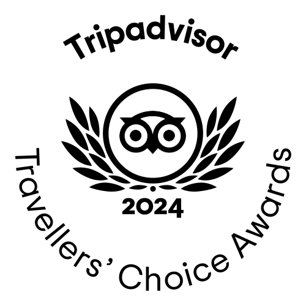
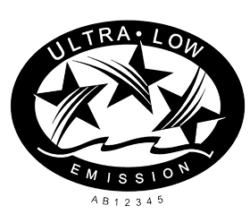
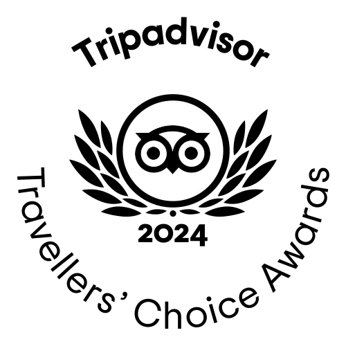
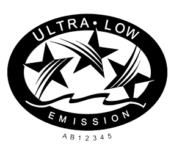

About Us
South Americans' Secrets is a company focused on tourism and founded by expert guides of Peru.
We are the most versatile tour guides on the south coast of Peru, operating directly in Paracas, Nazca, and Arequipa. We are also based in Cusco, ready to serve with a professional team dedicated to both customers and foreign travel agents. Our knowledgeable staff carefully monitors every arrival and departure, responding to customer needs with confidence and courtesy.
Founded in 2002, South Americans' Secrets is committed to creating memorable experiences for all travelers. Our mission is to build trust and friendship with our guests, ensuring sustainable and inclusive tourism through social and environmental responsibility. We listen to our customers' needs, offering custom programs, private travel, fixed departures, regional activities, and special interest tours.
Our Team
Certificates of Excellence
 



South Americans' Secrets was established in 2002 with the mission to create memorable experiences for all travelers alike. Sixteen years after, we won the Tripadvisor certificate of excellence. All our ships have US EPA certificate, ranked as ultra-low emissions. Our client is the priority; every boat trip customer is insured with Positiva Seguros.